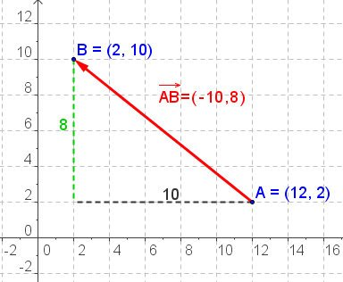

¿Quieres saber si un cierto vector depende de algún modo de otro o de otros? ¿Quieres saber como obtener nuevos vectores a partir de otros? Esto es precisamente lo que vamos a ver en este punto.
Vamos a mezclar (combinar) las operaciones: multiplicación por escalar y sumas/restas vistas en el punto anterior, para generar nuevos vectores a partir de otros.
Esta mezcla de operaciones, se denomina combinación lineal.
Definición. Dependencia lineal.
|
Decimos que un vector, \(\vec{u}\), depende linealmente de otro vector, \(\vec{v}\), o que \(\vec{u}\) y \(\vec{v}\) son linealmente dependientes si existe un escalar, \(\alpha \in \mathds{R}\) (un número), de tal manera que: \(\vec{u}=\alpha \cdot \vec{v}\) \[\pmb{\color{green}{\vec{u}, \, \vec{v} \quad l.d. \Longleftrightarrow \exists \, \alpha \in \mathds{R} \, | \, \vec{u}=\alpha \cdot \vec{v}}}\] Por el contrario, si no existe ningún número que cumpla esa condición, diremos que \(\vec{u}\) no depende linealmente de \(\vec{v}\), o que \(\vec{u}\) y \(\vec{v}\) son linealmente independientes. |
En la práctica es fácil identificarlo:
|
· Gráficamente: Si dos vectores son paralelos, son linealmente dependientes. · Analíticamente (coordenadas): Si sus coordenadas correspondientes son proporcionales, entonces son linealmente dependientes. |
Completa.
Lee el párrafo y completa los huecos que faltan:
Hasta aquí, teniendo dos vectores nada más, bien. Pero, ¿y si tenemos dos vectores y queremos saber si un tercero, depende o "se puede fabricar" a partir de los dos primeros?
Definiciones. Base. Combinación lineal. Coordenadas.
|
· Dos vectores, \(\vec{u}\) y \(\vec{v}\), forman una base en el plano si son linealmente independientes. · Diremos que el vector \(\vec{w}\) se puede expresar como combinación lineal (depende linealmente) de los vectores \(\vec{u}\) y \(\vec{v}\) si existen dos escalares \(\alpha\) y \(\beta\) de tal manera que \(\vec{w}=\alpha \cdot \vec{u} + \beta \cdot \vec{v}\) · Si dos vectores forman una base, entonces cualquier otro vector \(\vec{w}\) se puede obtener como combinación lineal de \(\vec{u}\) y \(\vec{v}\). En este caso, si \(\vec{w}=\alpha \cdot \vec{u} + \beta \cdot \vec{v}\), entonces diremos que \(\vec{w}\) tiene coordenadas \((\alpha,\beta)\) respecto de la base formada por \(\vec{u}\) y \(\vec{v}\). |
Verdadero o falso.
Indica Verdadero o Falso según corresponda:
00:00:
Combinación lineal de vectores.
Ejercicio.
Vamos a poner en práctica lo aprendido, expresando el vector \(\vec{w}= (12, 6)\) como combinación lineal de los vectores: \(\vec{u}=(3,0)\) y \(\beta=(1.5, 1.5)\)
Nota: Necesitarás resolver sistemas de ecuaciones. Si no los recuerdas, puedes repasarlos en la unidad correspondiente.
Vectores ortogonales
Dos calles son perpendiculares, si sus esquinas forman un ángulo de 90º, un ángulo recto. Pues bien,
| cuando dos vectores forman un ángulo de 90º en sus orígenes, decimos que son ortogonales (o perpendiculares). |
Definiciones. Base ortogonal, ortonormal y canónica.
|
· Si una base está formada por dos vectores linealmente independientes ortogonales, la llamaremos base ortogonal. · Si los dos vectores que forman la base, además de ser ortogonales, son unitarios, diremos que es una base ortonormal. La base ortonormal más sencilla se conoce con el nombre de base canónica y está formada por los vectores \(\vec{i} = (1,0)\) y \(\vec{j}= (0, 1)\). · Un sistema de referencia en el plano, es una terna formada por un punto, \(\text{O}\), que llamaremos origen del sistema de referencia y una base. Si la base es ortogonal (ortonormal), el sistema de referencia será ortogonal (ortonormal). El sistema de referencia que utilizamos normalmente es el compuesto por el punto \(\text{O} = (0,0)\) y la base canónica formada por \(\vec{i} = (1,0)\) y \(\vec{j}= (0, 1)\), es decir, \(R = \left\{\text{O},\vec{i},\vec{j}\right\}\) |
Coordenadas de un vector respecto a sus extremos.
Por último, vamos a ver, qué relación mantienen las coordenadas de un vector, respecto a los extremos del mismo.
Dados dos puntos \(\mathrm{A}=(x_1,x_2)\) y \(\mathrm{B}=(y_1,y_2)\), entonces es posible obtener las coordenadas del vector \(\overrightarrow{\mathrm{AB}} \) respecto a sus extremos, simplemente restando a las coordenadas (componentes) del extremo final del vector, \(\mathrm{B}\), las del origen del mismo, \(\mathrm{A}\).
\(\overrightarrow{\mathrm{AB}} =(y_1-x_1,y_2-x_2)\)
| Tengo que haceros una aclaración que, si bien no afecta en nada al cálculo de dichas coordenadas, sí tiene importancia desde el punto de vista matemático. |
|
Aunque podría parecer que estamos restando las coordenadas de los puntos, "\(\overrightarrow{\mathrm{AB}}=\text {B-A} \)", esto no es cierto porque la operación "restar puntos" no existe. Lo que en realidad hacemos es restar vectores. Restamos al vector de posición \(\overrightarrow{\mathrm{OB}}\) el vector \(\overrightarrow{\mathrm{OA}} \). Así: \(\overrightarrow{\mathrm{AB}}=\overrightarrow{\mathrm{OB}}-\overrightarrow{\mathrm{OA}}\) , siendo \(\text{O}\) el origen del sistema de referencia cartesiano, \(R = \left\{\text{O},\vec{i},\vec{j}\right\}\), es decir el origen de coordenadas \(\text{O}=(0,0)\) |
|
 \(\overrightarrow{\mathrm{AB}}=\overrightarrow{\mathrm{OB}}-\overrightarrow{\mathrm{OA}}=(2-12,10-2)=(-10,8)\) |
Útil: punto medio de un segmento.
Para calcular las coordenadas del punto medio, \(\mathrm{M}=(m_1,m_2)\), del segmento cuyos extremos son los puntos \(\mathrm{A}=(a_1,a_2)\) y \(\mathrm{B}=(b_1,b_2)\) basta con aplicar la siguiente fórmula: